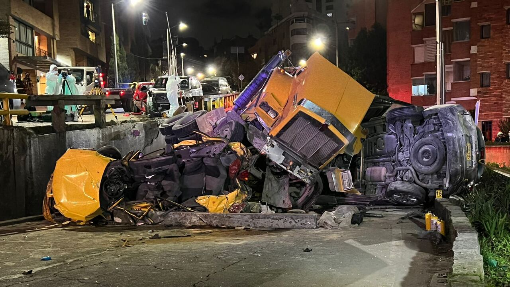

Noticias Bogotá es un portal digital independiente dedicado a informar, analizar y conectar a los ciudadanos con los acontecimientos más relevantes de la capital colombiana. Nuestro objetivo es ofrecer cobertura actualizada sobre temas de interés local como seguridad, movilidad, cultura, política, medio ambiente y comunidad. Desde los barrios hasta el centro, desde los eventos culturales hasta las decisiones del Concejo, buscamos reflejar la diversidad, los retos y las voces que hacen de Bogotá una ciudad vibrante y en constante transformación. Con un enfoque ágil, transparente y comprometido, trabajamos para que cada bogotano esté informado y participe activamente en la vida de su ciudad.
Ojo: estos son los cortes de agua en Bogotá para este viernes 21 de abril

03 de septiembre de 2025
Periodico Espectador.
Historia: Luis Clavijo, la víctima fatal del grave accidente en el norte de Bogotá

04 de septiembre 2025
Periodico El tiempo
Accidente En via Alterna
06 de septiembre de 2025